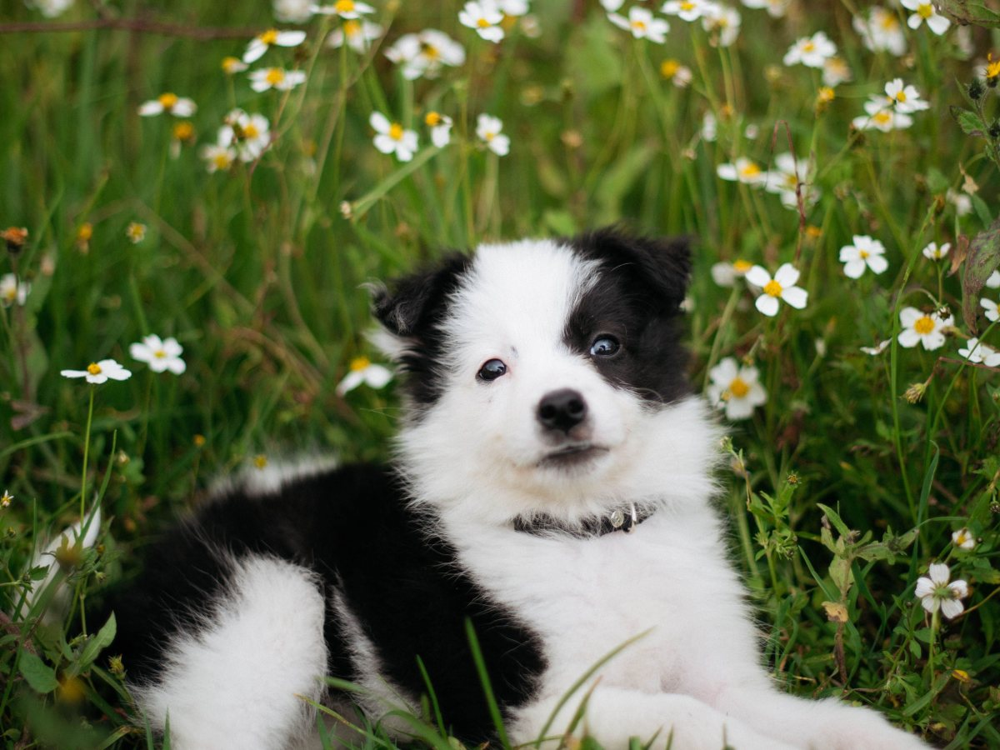
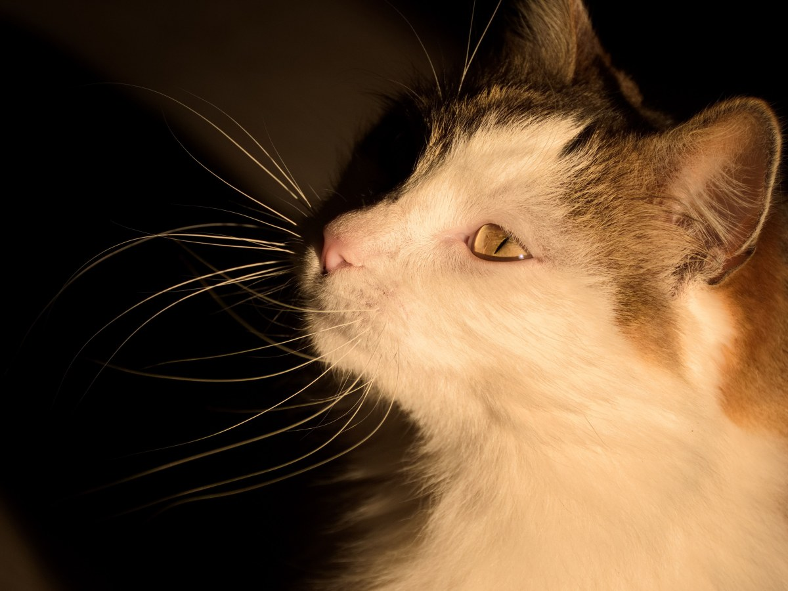
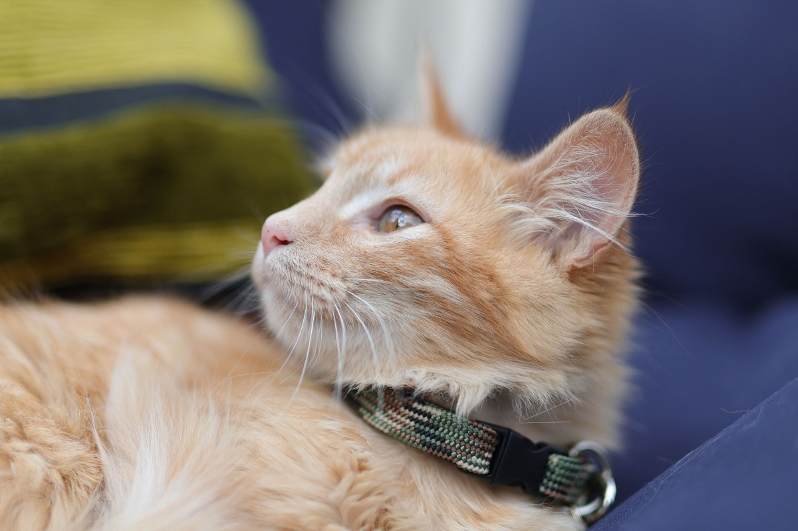

Veterinaria · Temuco
Cuánto sale, dicho antes.
Consulta, vacunas y cirugía en Altamira 02467.
- 357reseñas en Google
- 4,5de nota
- 5días de consulta, mañana y tarde
- 0páginas propias: sólo sale en directorios
Lo que a nadie le gusta preguntar
Cuánto sale
Antes de subir al auto, ya sabe el valor.
- desde $15.000
Consulta
Examen completo, peso y ficha.
- desde $12.000
Vacuna
Con su carnet al día.
- desde $45.000
Esterilización
Gata o perra, con control.
- desde $25.000
Radiografía
Resultado el mismo día.
Los valores reales los pone la clínica.
Nadie debería llegar a la consulta con miedo a la cuenta.
En la misma clínica
Lo que se hace aquí
-
La más pedida
Consulta
Para lo que está raro hace días.
-

Al día
Vacunas
Y desparasitación.
-
Pabellón
Cirugía
Esterilizaciones y traumatología.
-

Por dentro
Radiografía y ecografía
Sin derivar a otro lado.
-
Después de operar
Hospitalización
Con controles durante el día.
-
Baño y corte
Peluquería
Para que vuelva oliendo bien.
Los servicios los confirma la clínica.
Trescientas cincuenta y siete familias de Temuco.
357 reseñas con 4,5
Los pacientes
De vuelta en casa

Fotos de referencia: los pacientes de verdad los muestra la clínica.
Dónde estamos
Altamira 02467, Temuco
- Dirección
- Altamira 02467
- Teléfono
- 45 273 1003
- Reseñas
- 357 en Google, nota 4,5
- Atiende
- Lunes a viernes, mañana y tarde
Si es urgencia, llame antes de salir: así lo esperan.
Altamira 02467, Temuco Abrir en Google Maps
Para la clínica
Qué es real y qué falta
Lo verificado
El nombre, la dirección, el teléfono, las 357 reseñas con 4,5 y que atiende de lunes a viernes.
Lo de ejemplo
Todos los valores de «Cuánto sale» y el detalle de los servicios.
Lo que falta
Los valores reales, el horario exacto y fotos de la clínica y del equipo.